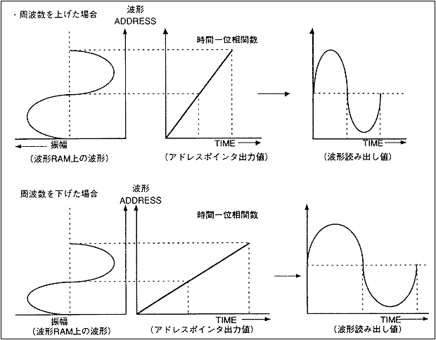
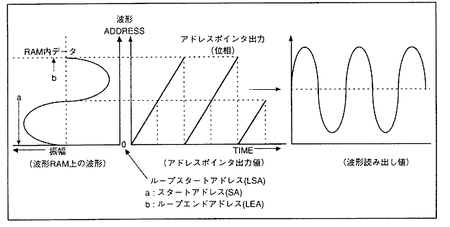
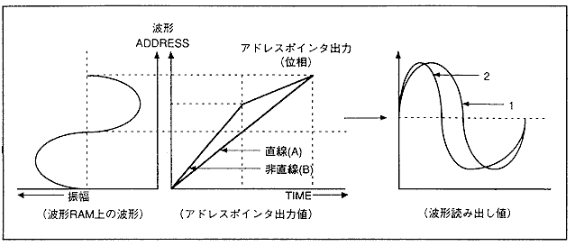
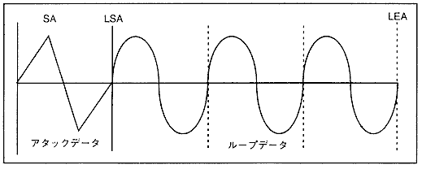
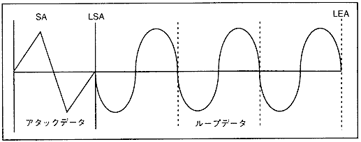
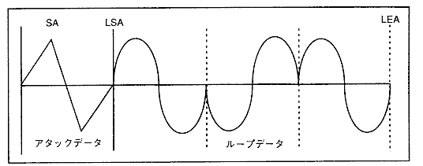
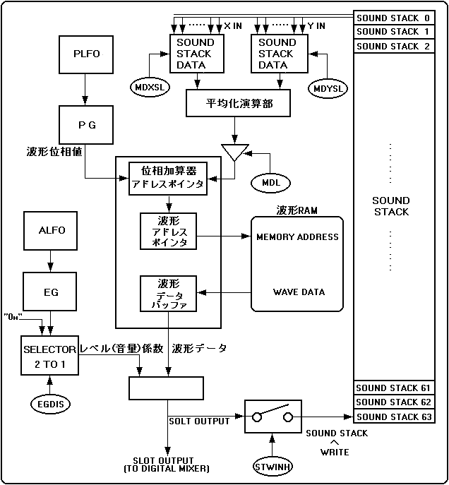

図4.16 周波数アドレスポインタ出力値

ＦＭ音声合成を行う時には、短い周期の波形をループして使用します。従って、アドレスポインタの出力値(関数)は、図4.17のようになります。
図4.17 ＦＭ音声合成実行時のアドレスポインタ出力値(1)

図4.17 ＦＭ音声合成実行時のアドレスポインタ出力値(1)
aのアドレスに、スタートアドレスを設定し、ループスタートアドレスの値を"0000H"に設定してしておき、波形読み出しアドレスと、波形ループ開始アドレスを同じアドレスに設定します。
更にbのアドレスが波形ループ終了アドレスとなるようにループエンドアドレスを設定すると、図4.17のような波形が得られます。
図4.18 ＦＭ音声合成実行時のアドレスポインタ出力値(2)

図4.18 ＦＭ音声合成実行時のアドレスポインタ出力値(2)
図4.18のようにアドレスポインタの出力値を線形にした場合(Aの波形)は、RAMの波形どおりに出力します（１の波形）。しかし、非線形関数（Bの波形）になると波形の読み出し方が変わり、２の波形を出力します。
このように波形が変形すると、音色が変わります。
この位相値を時間的に変動させることで波形を歪ませることを応用したものが、ＦＭ音声合成方式です。ＦＭ音声合成方式はアドレスポインタ出力値(位相値)を非線形にする方法として、実際には他の（場合によっては自）
スロットの出力値を加算する方法をとっています。今までは、ノーマルモードを例にとって説明してきましたが、その他にも"LPCTL"レジスタの変更により、リバースループ、オルタネーティブループの設定が可能です。
"LPCTL"レジスタにより指定できるループデータは図4.19、図4.20、図4.21のようになります。
図4.19 ノーマルループ

図4.20 リバースループ

図4.21 オルタネーティブループ

ノーマルループ、リバースループは、"LSA","LEA"に対応するデータが同じあることを前提としているため、"LSA"のデータを"LEA"にコピーしてループデータを作成してください。
オルタネーティブループの設定値は、必ず"LSA"＜"LEA"となるように設定してください(全てのループにおいて、"LSA"＞"LEA"にした場合の動作は保証できません)。また、ループスタートポイントとループエンドポイントに重複してデータを置くことによって、
オルタネーティブループの場合のピッチを他のループモードのピッチと一致させることができます。全ての波形のループモードをオルタネーティブループに限定した場合"LSA","LEA"に対応するデータは、同じ値である必要はありません。
実際のＦＭ音声合成の実現方法をブロック図で表すと、図4.22のようになります。
図4.22 ＦＭ音源構成図

以下に、ＦＭ音源構成図の各ブロックについて、説明します。
SOUND STACK(サウンドスタック)
各スロットの出力を格納します。SCSPのスロットは、２つのスロットの出力値(サウンドスタック内データ)を入力することができます。
平均化演算部
各スロットにはXおよびYの２つの変調入力があります。この２つの入力を１つにまとめるために、加算を行なう必要があります。加算結果をオーバフローさせないようにするためには、２つの入力を１／２倍してから加算する方法があります。
SCSPではこの方法を取り入れることにより、２本の入力データを１本の出力データに変換しています。
入力データをXDおよびYD、出力データをZDとすると、次の式で表すことができます。
平均化演算部の式
┏━━━━━━━━━━━━━━━━━━━━━━━━━━━━━━━┓
┃ ＹＤ ＸＤ ┃
┃ │ │ ┃
┃ ＸＤ ＋ ＹＤ ┌┴──────┴┐ ┃
┃ ＺＤ ＝ ───────── │ 平均化演算部 │ ┃
┃ ２ └────┬───┘ ┃
┃ │ ┃
┃ ＺＤ ┃
┗━━━━━━━━━━━━━━━━━━━━━━━━━━━━━━━┛
これは、平均値を求める式と同様であることから、この演算ブロックを平均化演算部と呼んでいます。
MDL［モジュレーションレベル(変化量)］
外部スロット入力によるＦＭのかかり具合(度合い)を調整するために用います。
位相加算器
PGで生成される位相値と、平均化演算部を経てMDL演算によって生成された位相値を加(減)算します。また、加算または減算の実行判断は、ループモードとループ状態によって決まります。
レベル乗算部
波形メモリから読み出された波形と、ALFO、TL(Total Level)、EGによって生成されるレベル係数を乗算します。更に、実際の波形出力レベル調整を行ないます。
波形RAM
サウンド用RAMです。
波形アドレスポインタ
各スロットに設定されたSA(スタートアドレス)値と、位相加算器から出力される波形位相値を加算または減算して、実際の波形メモリアドレスを生成するブロックです。
波形データバッファ
波形メモリから読み出された波形を、一時的に保存しておくためのメモリです。
PG(Phase Generator)
発音周波数の波形の読み出し速度を管理します。(実際は、波形の読み飛ばしを行なっています。)
EG(Envelope Generator)
各レイトやレベルの設定に従って、値の時間的な変化(エンベロープカーブ)を作り出すブロックです。ここで生成された値は、レベル演算部に送られた後に波形データと乗算されるので、波形の出力レベルが時間的に変化することになります。